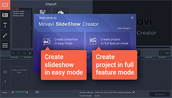
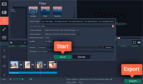
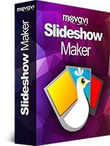

How to Make Videos with Pictures and Music
Did you have a great vacation this summer? Give yourself a positive emotional boost for the winter by creating an evocative slideshow with music and titles or a photo collage from your holiday photos! With Movavi Slideshow Maker, you can turn your photos into a movie in just a couple of minutes even if you have no experience in video montage. Interested? Let’s get started!
1. Install the Program on Your Computer
Download Movavi Video Converter for Windows or Mac. Run the downloaded file and follow the instructions to install the software on your computer.
2. Select the Working Mode
When you launch Movavi’s slideshow maker with the music-adding capability, you’ll see a Welcome window. In this window, you can choose one of two working modes: Easy mode or Full feature mode. If you want to quickly make a slideshow with photos, music and transitions, choose Create slideshow in easy mode. If you want to incorporate video footage, titles, special effects, and other enhancements to your movie, choose Create project in full feature mode. Instructions for both modes follow below.
3. Create a Slideshow
4. Save Your Clip
Click the Export button and select the appropriate option from the tabs in the upper part of the pop-up window. You can save your slideshow to watch on your computer or mobile device, or prepare it for uploading to the web. When you’re done, click Start. Now you know how to use our handy photo-to-video maker with music, titles and transitions!
Movavi Slideshow Maker
An easy-to-use, yet efficient slideshow making program!
- Create a slideshow with music in 3 simple steps
- Join slides with dynamic transitions
- Add stylish animated titles
- Adjust color, enhance picture quality